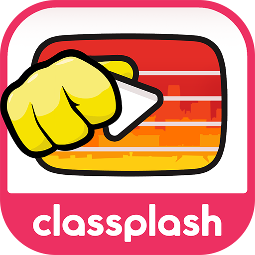
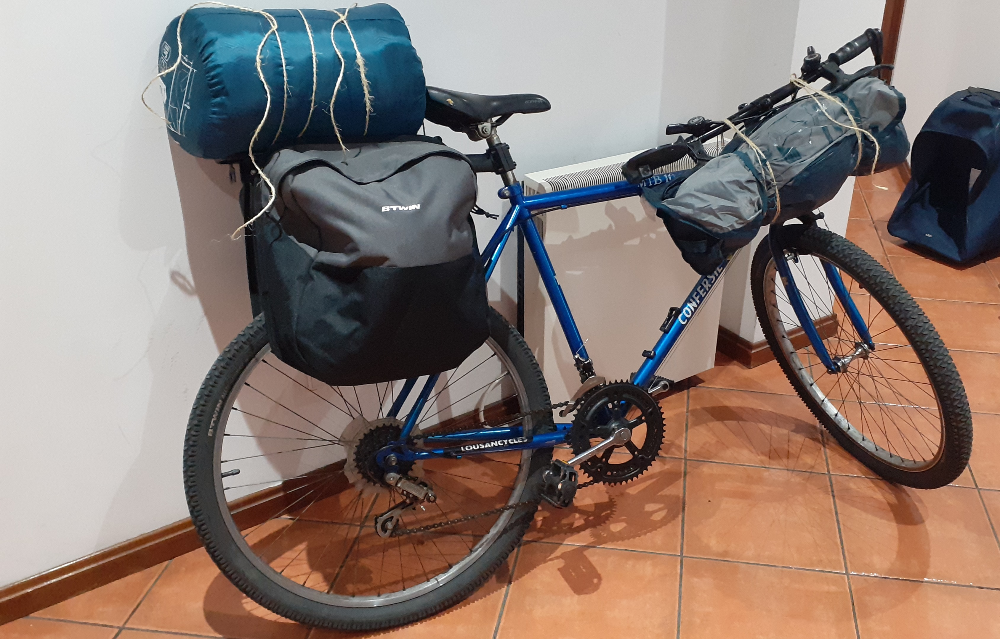

Diogo Costa
... Who enjoys wearing many other hats when push comes to shove.
... Who enjoys wearing many other hats when push comes to shove.
Games
Programming Game Design VFX Tools Narrative Design
The Magic Flute is the official companion game to the 2022 movie of the same name.
It is a rhythm game designed to be played with a real recorder through the microphone input.
I was the main programmer working on the game, and also extended the design from the previous apps to provide a more polished and complex experience - I believe players can and should be challenged, when provided with tools that make learning smoother and empower the player.
I also brought new techniques in animation and VFX to the table, resulting in a more polished look and feel.
Download: App Store, Google Play
Narrative Design Game Design AI Programming Tools 2D Art
Anarchima (placeholder name) is a tactical cRPG I've been developing in my spare time in 2022.
Its biggest influences are Ultima and the early Fallouts, with a heavy focus on narrative design, where quests set up conflicts between various towns with multiple solutions. The different solutions change internal variables that will determine the decision available in the end-game as well as their outcome in a game that goes beyond good/bad.
The combat, although not as much of a focus, is being designed to provide a much wider toolbox to the player, allowing for both tactical depth (with positioning, flanking, tile attacks, etc.) as well as study and preparation for fights (with buffs and versatile equipment).
Download: Demo Soon
General Design Programming 2D Art Music
AmalgamA is a casual puzzle game where levels are generated using a cellular automaton.
Everything came together beautifully in about a month and a half of work (although the ideas, unknowingly to me, required a brewing period during which I was learning about and playing around with cellular automata).
The cellular automaton provides puzzles that quite literally grow from a small seed, resulting in very aesthetically pleasing results (if I may say so myself!).
The music, although not at all relaxing, was also procedurally generated, with dissonance tied to the puzzle state (it starts out very dissonance, but slowly becomes consonant and uplifting as you solve the puzzle).
Despite its very apparent flaws, I am still very happy with it, especially in its symbolism and how each element reinforces each other. It was very organic to develop, with each element being the way it is almost out of necessity.
Download: itch.io
General Design VFX Programming Tools 3D Art
Angkhorror is a prototype of a horror "walking-sim", inspired by Ultima Underworld, the works of KittyHorrorShow and Indian/Khmer Architecture.
It unfortunately did not come together in the end, but I am happy with various of its elements, which I may still use in the future.
I tried to capture the fractal nature of Indian architecture with custom 3D modelling tools.
The combined use of the low-fi aesthetic also let me using various kinds of textural noise (using shaders) to design the abstract ornaments for friezes and other panels.
I was very happy with the skybox, using a previous high-res starsky shader, coupled with dithering and larger stars to work in a low-res setting.
Unfortunately, compression kind of killed the video, so please check the project page for crisper screenshots.
Download: send me an e-mail and I'll provide the project!
Programming Tools Network
The Harmony City is a rhythm game designed to teach youngsters to play chords Guitar and Ukulele.
I started my job there at the end of development programmed the tool used to create its weekly levels as well as several support features
.
I also tweaked the practice mode to allow players to pause the game and practice the upcoming chords (a glaring blind spot in the then current design).
Download: App Store, Google Play

This is for smaller prototypes I've done over the years.
It includes many different kinds of games and mechanics, mostly done during my university years, in my spare time.
These are very unfinished and unpolished, but it gives a sense of my curiosity and tendency towards constant experimentation.
A general overview of the prototypes includes:
Projects
This project started from Andrew Glassner's Digital Weaving articles.
It's one of my favourite algorithmic art systems, especially for pixel-art like patterns.
It's very understandable and, most importantly, controllable, and with multiple sub-systems to explore and extend. In particle, I love how you can keep a fairly stable (and aesthetically pleasing) structure that goes way beyond simple mirror symmetry while changing the low level pattern details.
Download: send me an e-mail and I'll provide the project!
This was a project inspired by Flatland and Miegakure, and coalesced as I was reading Tegmark's Mathematical Universe.
It takes a 4D convex object and renders it where it intersects with the our whole 3D space.
This was my first time touching Unity. It was also my first time doing anything 3D - ironically enough.
I really enjoyed it, and it confirmed my love for working with geometry.
Download: send me an e-mail and I'll provide the project!
This was an algorithm art project dealing with Chinese Lattice Window/Door designs.
I had already done projects with Celtic Knots (following Glassner, Peter Cromwell and George Bain) and Islamic Star Patterns (following Craig Kaplan), but the work was completely my own.
I read through Daniel Sheets Dye's Chinese Lattice Windows book and inferred two different systems to generate more patterns, one based on overlapping tilings (with squares, octagons or hexagons), and one based on space-filling with tetrominos (roughly).
I had another system based on Hamiltonian Paths (including an "easy" version of it) or Space filling curves, but I didn't get to try them out. Maybe one day!
Download: send me an e-mail and I'll provide the project!
This project was my first application of a shader.
I had learned about much more expensive cellular automata after working on AmalgamA, but those were too slow to explore with my old tools.
So I took an MSc course on graphics, learned the basics of shaders, and implemented this one. It's quite beautiful!
The most important different is that cells look at every neighbour within a radius of 20 or more cells, instead of radius of 1. A shader's parallelization really makes it work in real time, enabling exploration, which is key to finding the coolest patterns!
They grow really organically, it's really great to watch. I colored them with a simple gradient (based on time of stabilization), but then perturbed the saturation and luminosity of the colors for a better result.
Download: send me an e-mail and I'll provide the project!
Having used shaders for a bit, at this point, I was very familiar with the applications of "fractal brownian noise" and the like for basic terrain generation, but something was missing.
Then, I saw Loren Schmidt's own work (unfortunately lost to time), which excited me with the possibility of simulating erosion.
This, then, was the result. I first implemented a shader-version (in shadertoy), based on a heightmap, but then found a paper to simulate erosion in meshes and decided to try it out.
It combines erosion (from rain) with a constant, if slow, uplift due to tectonic movement.
I love the results, has a great textural quality, and is quite fast, too (runs in linear time).
Download: send me an e-mail and I'll provide the project!
One of the few projects I've done that I think could actually be used to spice up many other games, including AAA.
It's a shader that maps stars onto a sphere and controls their intensity individually at little to no cost.
Initial implementation used 3D noise, but it can easily be baked into a static texture.
Also adapted it into into a low-fi setting for Angkhorror, using larger stars and random dithering to prevent ugly color banding.
Download: send me an e-mail and I'll provide the project!
The previous slides include my favourite projects. This one is reserved for the remainder.
Voronoi Tilings, as the name suggests, is a tool that uses voronoi diagrams to create floor tilings.
Celtic Knots is a tool to create simple stylized celtic knots using the "cut method" and Bezier Curves for finer-grained stylization.
Apollonian Gaskets is a tool to generate colorful ornaments using the fractal apollonian gaskets (circles all the way down).
The shader experiments were especially important to learn how to use various kinds of noise to synthesize textures and created VFX. I have also experimented a bit with multi-pass effects like outlines and sun shafts.
About
Hey! My name is Diogo, and I'm a game designer and programmer from Portugal.
My focus is on Game Design (specialized in Gameplay and Systems Design, always with an eye to aesthetics) and Programming, but I am also skilled in Narrative Design and VFX.
I have a Master's degree in Computer Science, where I focused on the more mathematical courses (the games/graphics' department wasn't much to my liking) on algorithms, complexity, multi-agent systems, etc.; my thesis was on the Computational Complexity of Video Games.
This section contains some more personal details about me - some related to games, some not at all. Neither strictly professional nor exhaustive.
My favourite genres are cRPG (especially the early Fallouts), Rhythm (like Thumper and Bit Trip Runner), Weird ((if it isn't a genre, it has become one) Mu Cartographer, Vesper5, Hyperrogue), and City-Builder/Colony-Sim(Anno, Rim World).
I also have a deep but still distant fascination with grand-strategy and deep simulation games like Dwarf Fortress and Paradox Games.
Finally, I must add rogue-lite not as a genre as much as an overarching "structure". I think it is a brilliant way to force players to experiment with the mechanics and to foster mastery.
That said, I enjoy almost all kinds of games and sample widely, from spectacle fighters, to logic puzzle games, to platformers and everything in between.
I am mostly an explorer and my favourite games (to play and to create) are usually flawed but brave and genuine in trying to break new ground.
Some of my biggest influences (as a game developer, but also extending beyond it) are: Jonas Kyratzes, Michael Brough, Loren Schmidt, Devine Lu Linvega, Edmund Mcmillen, Will Wright (Vlambeer and Derek Yu get a lot of credit for when I was just starting out!).
More general influences can be found here.
I've recently discovered how enjoyable it is to raggedly travel on an old bicycle with little more than a tent, a sleeping bag and a book.
I've taken a couple of short-tours (3/4 days) in Portugal and a week-long tour in Sweden. I also take fairly long rides into the woods and hills on the weekends to clear my mind.

Aside from games, I am also a very avid reader. It's part of my routine, sometimes for pure enjoyment, sometimes for research (for games or something else), something just to broaden my horizons.
Everything from evolutionary biology/psychology, to history, to mathematics, to biographies, to sci-fi (Le Guin and Greg Egan being particular favourites!), to epic poetry (from the Iliad to th Aeneid, to Beowulf, to El Cid, to Martin Fierro, to a retelling of the Ramayana because the Indian epics are waaay too long haha, etc.), to folk tales, to japanese literature (Soseki and Kawabata are especially dear to me), to Borges, and everything in between. Depending on my mood and my interests at the time.
Perhaps one day I'll set up a digital library (I do like to look back and see what tickled my fancy at specific periods over the years).

Music has played (pun intended) an important role in my life ever since I picked up the guitar as a 15 year old.
Though I still play the instrument, music is not an area of output for my creative tendencies, but one of input, mostly.
I am grounded in classic and progressive rock/metal, but I have a fairly eclectic taste (from hindustani classical music, to klezmer, to norse/slavic folk, etc. etc.)
Beyond the electric guitar, I also dabble into other instruments (I've got a dobro slide guitar, a Shakuhachi, a violin and a keyboard, to name a few; the collection stopped growing once I started to lean towards nomadism...).
Proud to have participated in the Freak Guitar Camp with the mad Mattias "IA" Eklundh. A week of sleeping in the woods reciting "tadikidatom" followed by a week of dreaming of "takita takita ta", strongly recommended.
I have written extensively about games.
It started in my early university years, when I wrote long Steam reviews as a way to analyse games and their design while I learned my first programming steps. I have over 250 reviews (I'd say at least half of which are long and pondered).
Later, I was contacted by SaveOrQuit and wrote 27 long game reviews for them, which you can find here.
Some other pages can be found about people I appreciate, about the application of cultural evolution to video games and simulations, and some small ideas I have that I am open to collaborating on in a part-time/spare-time capacity. Also some MOOCs I've taken.